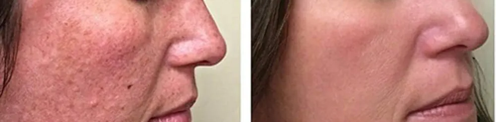

Scars
How to Treat Them?
If you are interested in us helping you with this topic:
Book Your Initial Consultation Now!If you are interested in us helping you with this topic:
Book Your Initial Consultation Now!Scars, especially acne scars, are visible marks on the skin formed after an injury or inflammation. In the case of acne, these scars usually appear when outbreaks are severe or poorly manipulated. At our Aesthetic Center, we offer various treatments to improve the appearance of scars and restore a more uniform and healthy look to the skin.
At our Aesthetic Center, we offer a variety of scar treatments tailored to each patient according to scar type and severity. Among the most effective are:
Scars do not worsen over time, but without proper treatment, they can become more noticeable. Treatments such as chemical peels and Q-Switch laser are key to improving the appearance of scars and preventing them from looking worse visually.
Results will depend on scar type and treatment used. In general, you can expect significant improvement in skin texture, tone, and appearance. Treatments like Q-Switch laser and chemical peels offer visible results after several sessions. At our Aesthetic Center, we design a personalized plan for each patient to achieve the best possible results.
